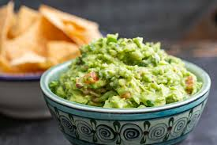

Guacamole
An easy to make dip for chips!

Servings
1
Ingredients
- 0.125 diced red onion
- 0.5 lime
- 2 avocados
- 1 tsp. of finely diced jalapenos
- 1 handful of diced cilantro
- 0.5 diced tomatoe
Instructions
- Have chilled mixing bowl ready
- Soak diced onions in the lime juice you squeeze
- Get the flesh of 2 avocados and mash them in a bowl
- Put cilantro, onions and lime juice, tomatoes, and jalapenos in the guacamole
- Mix thoroughly but gently
- Serve with some chips and enjoy!